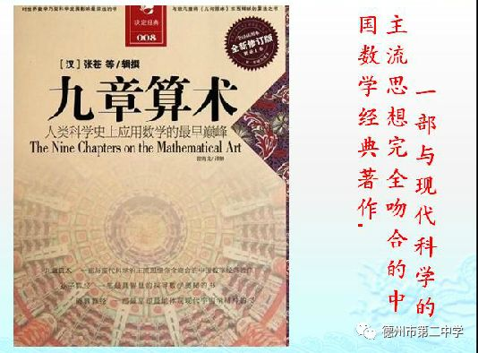
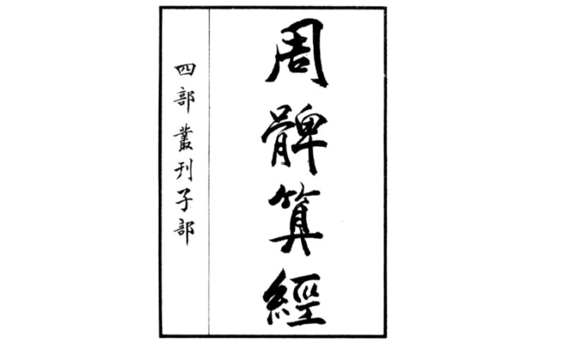

(Nine Chapters on the Mathematical Arithmetic)
Author:Unknown

The Nine Chapters on the Mathematical Art is the first mathematical...
The Nine Chapters on the Mathematical Art is the first mathematical monograph in ancient China. It was written around the first century AD and was supplemented and edited by Zhang Cang, Geng Shouchang and others in the Western Han Dynasty. The book is divided into nine chapters, including Fangtian (calculation of the area of plane geometric figures), Sumi (proportional conversion of grains), Shuaifen (proportional distribution problems), Shaoguang (problems such as inverse calculation of side lengths with known areas and volumes), Shanggong (earthworks and volume calculations), Junshu (rational distribution of taxes), Yingbuqi (profit and loss problems), Equations (solutions of multivariate linear equations), Pythagorean theorem (application of the Pythagorean theorem), etc., covering all aspects of social production and life at that time.
The Nine Chapters on the Mathematical Art systematically summarizes the mathematical achievements of the Warring States, Qin and Han dynasties, and occupies an important position in the history of mathematics.
(Zhoubi Suanjing)
Author:Unknown

The Zhoubi Suanjing, originally named Zhoubi, is an ancient Chinese work on mathematics and astronomy ...
The Zhoubi Suanjing, originally named Zhoubi, is an ancient Chinese work on mathematics and astronomy. It was written around 100 BC and annotated by Zhao Junqing, a mathematician from the Han Dynasty, Zhen Luan, a mathematician from the Northern Zhou Dynasty, and Li Chunfeng, an astronomer and mathematician from the Tang Dynasty.
In terms of mathematics, Zhoubi mainly records the mathematical achievements of the Han Dynasty. It was the first to propose the Pythagorean theorem, which is important in geometry, and gave the general formula of the Pythagorean theorem in the method of measuring the height of the sun[2].
Zhoubi contains a sun height map drawn using the method of weight difference, but the method is not explained in detail. During the Three Kingdoms period, Zhao Shuang and Liu Hui conducted further research and made it the core content of ancient Chinese meteorological theory[2].
In Zhoubi, Zhou means circle and Bi means leg. The above records the conversation between Zhou Gong and Shang Gao, which contains the earliest written record of the Pythagorean theorem, namely "the hypotenuse is three times the leg, the chord is four times the sine, and the sine is five", also known as the Shang Gao theorem[4]. In fact, this theorem should be moved back in time.